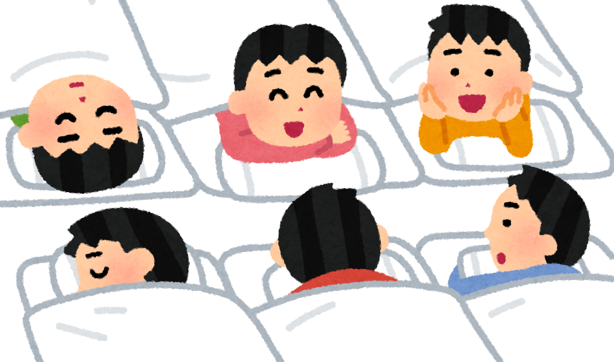
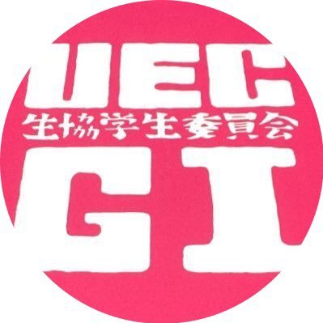

サークルは同じ大学の仲間で一緒に楽しむ一種の習い事のようなものです． 習い事というと，真面目っぽい感じがしてしまいますが，本当にいろんなサークルがあります． 電気通信大学におけるサークルがまとまったページはこちらです．
大学生は休みの日に何をしているの？
人によってまったく異なります． 逆に言えば，自由な時間はその人の好きにしていいんです． 一日中ゲームをしててもよし，料理やプログラミングの勉強をしてもよし，何でもありなんです． ただ時間の使い方が自由な代わりに，あとで時間の使い方を後悔しても，それは自分の責任だということを心に留めておいてください．
大学生って一日中遊んでばっかりじゃないの？
そのような人も中にはいます．小学校では考えられませんよね． 日本の大学は入学するのがむずかしいけど，卒業は簡単といわれています． 全ての授業で小学校のように出席をとるわけではないので，授業をサボれるだけサボるといる人もいるらしいです．
授業を普通に受けていれば，1日のうちで2〜3時間は家で自由な時間があります． 自由な時間を次のようにして過ごす人がいます．
- 宿題に取り組む
- サークル活動を楽しむ
- 友達と遊びに出かける
大学生の宿題ってどんな感じなの？
サークルって何？

またサークルとは少しちがうものとして，委員会というものもあります． みなさんも小学校の時に何かの委員だったことでしょう． 小学校の委員会とちがい，自分たちのしたい企画を自分たちで行うことができます． 例えば，電通大には生協学生委員会という委員会があります (電通大生協のホームページはこちら)． 生協のお店には学生にとってうれしいものがたくさんおいてあるのですが，なんとそこで販売されるグッズの企画ができます！ 他にも電気通信大学のお祭りである調布祭の企画を行う委員会や，新入生を歓迎する会の企画を行う委員会もあります．
